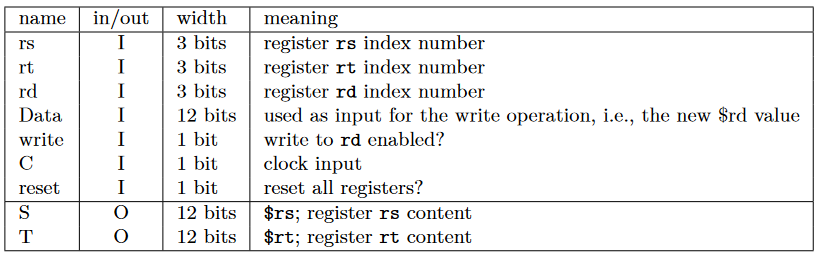
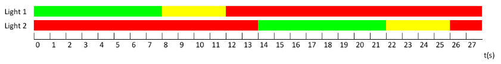

Titel: Computer Architectuur Project 4: Memory
Dit verslag werd opgesteld door:
De oplossing bestaat uit de volgende bestanden (geef alle bestanden op):
1. Build a 12-bit register using 12 D flip-flops (from Logisim) that are updated on the falling edge (beware: in Logisim D flip-flops are by default on the rising edge). Inputs are:
The only output is a 12-bit Q that contains the contents of the register.
The following register is created, using the builtin D filp-flop in Logisim. They are set to trigger on falling edge.
2. Build a register file made of 8 of your own 12-bit registers. The register file must be able to read from and write to specified registers. In this case, the register file reads from two registers, and can possibly write to a register at the same time. Register 0 is a special case: it always contains zero, and writing to it does not modify its contents. The register file has the following in- and outputs:
The $rd is decoded so we can know what register to write to. The $rs and $rt are selected using a multiplexor.
3. Build a counter using your own 12-bit carry lookahead adder and 12-bit register. Inputs are C (the clock) and D (a 12-bit number up to which the counter counts), the output is the current 12-bit value of the register. At every clock tick, the counter adds 1 to the number in the register. When the register value is equal to or greater than D, the value is reset to zero. A counter with its D-input equal to 3 counts from 0 to 2. You can use the Logisim built-in Comparator.
The comparator check if the current value is equal to a Data input. If so it resets the register. It adds 1 to the register every clock cycle.
4. Build a finite-state machine that implements a traffic light system on a cross section. Finite-state machines use memory and a clock. Since finite-state machines are synchronous, a new state is computed every clock cycle. A 2 Hz clock has a full clock cycle of 1 second. Use your counter to advance through the states and make sure your state transitions happen at the right time. The two traffic lights behave like the following figure:
The counter, and the comparators are used to construct the traffic light.
5. (Bonus) Build a 12-bit stack using the logisim RAM element. Use your own 12-bit register to store the stack pointer. The stack pointer should always point to the next free address after the top of the stack. By default, the peek operation is performed, which simply outputs the value of the top of the stack, or zero if the stack is empty. Two 1-bit inputs will be used to indicate a push or a pop operation. The push operation will place the data from the Data input on top of the stack, and increase the stack pointer by one. The pop operation will replace the data on top of the stack with zero, and decrease the stack pointer by one.
The Stack is implemented using a custom circuit,
count_on_demand, which increases the counter if push,
decreases if pop, returns an error if both push and pop are
selected, or if pop when counter is 0.
Stack
Stack Count on Demand
IsNull (checks if value is null)